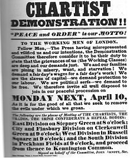
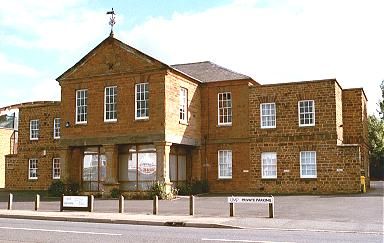
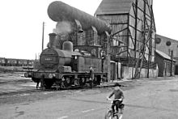
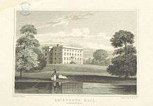

History
The main road from Northampton to Market Harborough passed through the village, where a number of inns served
the needs of travellers for refreshment, lodging and a change of horses. The buildings of two present-day pubs
in the village date back
to the era of horse-drawn transport:
- The George Inn
- The Coach and Horses

The church
All Saint’s Church is one of the oldest, largest and most complete Anglo-Saxon churches in the country. It was founded circa 680 AD and has been called as "The finest Romanesque church north of the Alps”.

Chartism
In June 1839, Brixworth was the scene of notable public meeting addressed by the Chartist Robert George Gammage of Northampton. Before the meeting took place, Gammage and his two companions attended a service in the parish church where the vicar Charles Frederic Watkins rebuked them and threatened the three with arrest if the meeting proceeded. Despite this, Gammage recalled that attendance at the roadside assembly later that day amounted to several hundreds and Watkins' efforts to persuade the constable to arrest those who addressed it were unsuccessful.

Poor Law Union
Brixworth Poor Law Union was established in 1835 and a workhouse erected on the south side of Spratton Road soon afterwards. Only the entrance block, including some later side extensions to it, remains; these premises are now used for business purposes. The activities of the Brixworth Poor Law Union attracted controversy, particularly in the latter part of the 19th century, because of its reluctance to provide relief to poor people unless they agreed to enter the Workhouse. Brixworth is the focus of a substantial work on the political, social and personal implications of welfare policies during the period. The Workhouse was closed in 1935. Now used as a Restaurant (see above link).
The Railway
The Northampton and Market Harborough Railway ran through the parish and was opened in 1859.Passing 0.5 miles (800 m) west of the village. British Railways closed Brixworth Railway Station to passenger traffic in 1960 and closed the line to freight traffic in 1981. The trackbed of the former railway was reopened in 1993 as the Brampton Valley Way.

Iron ore quarrying
At various times iron ore quarrying has been carried out on the north, east and south sides of the village. The ore was taken in various ways to the railway for transport to ironworks. The first quarry can still be seen west of the church at a place called Stonepit Close. It is now allotments. Quarrying began in 1863 and finished about 1874. It is not clear if the ore was taken away by tramway or by horse and road wagon to the station. In about 1873 another quarry was opened nearby, to the north of the church.This was connected by 4 ft (1,219 mm) gauge tramway to sidings at the station. When this was worked out the same tramway served later quarries further east to the north and south of Scaldwell Road, finishing in 1936 south of Scaldwell Road and in 1947 further north. The later quarries in this system were to the east of the A508.
Another quarry began in 1873 to the south of the village connected with the railway by 4 ft (1,219 mm) gauge tramway. This was firstly to the west of the main road in the area to the south of Froxhill Crescent and later to the east of the main road in the vicinity of what is now Ashway. Quarrying finished here in about 1912.
A new pit was begun in 1939, operating until 1949. This was operated by the Staveley Coal and Iron Company and was connected to their quarrying operation at Scaldwell by an extension of their 3 ft (914 mm) gauge tramway. The ore was transported from Scaldwell to sidings near Hanging Houghton via an aerial ropeway. The aerial ropeway was replaced in 1954 by a standard gauge branch line.
Another quarry began operation in 1880 west of Station Road, opposite Stonepit Close. It had its own tramway to the sidings at Brixworth Station and ceased operation in 1896. The 4 ft (1,219 mm) gauge tramways were worked by horse at first but the first steam locomotive was in use by 1879. Quarrying was done by hand at first.
The first steam quarrying machine was in use by 1917, and the first diesel machine in 1935. Close to the south and east of the village most of the quarried area has had housing and an industrial estate built on it. In the industrial estate the street names Ironstone Way, Quarry Road, Ferro Fields and Staveley Way commemorate the quarries. Apart from Stonepit Close the visible remains of the quarrying are in the form of ground levels being below the roads and surrounding fields. The industrial estate and part of the churchyard are lower than the original landscape, due to the quarrying activity.
Village development
The Historic England website contains details of a total of 17 listed buildings in the parish of Brixworth, all of which are Grade II apart from All Saints' Church, which is Grade I. They include:- All Saints Church, Church Street
- Brixworth War Memorial, All Saints' Churchyard
- Coach and Horses Inn, Harborough Road
- Cross, Church Street
- Home Farmhouse, Church Street
- Mint Cottage, Church Street
- Steps Cottage, Silver Street
- The Firs, Saneco Lane
- George Inn, Northampton Road
- The Granary, Church Street
- The Grange, Kennel Terrace
- The Lodge, Northampton Road
- Manor House, Harborough Road
- Old Vicarage, Church Street
- Pound House, Northampton Road

Brixworth Hall
Brixworth Hall was near the church, surrounded by a park and close to the centre of the historic settlement of Brixworth. The hall was built in the Tudor period by the Saunders family who were part owners of the manor of Brixworth from 1532. The house was owned by four generations of the Saunders family until the early 18th century. It was extended in the 18th century, incorporating parts of the original building. The house was offered for sale by auction in 1801 at which time it was described as being a spacious stone mansion with coach house, stabling, gardens, canals and fish-ponds. The hall was demolished in 1954.The above information was sourced from British History Online.
For more information on the history of the
village please visit their excellent website.
Photos used are taken by myself or sourced online. Mainly from
Wikipedia.